第9分団
令和2年度トピックス
改めて4月より９分団の活動が始まりました。島田前分団長が3月末をもち退団となり、4月より磯田新分団長の就任となりました。
新入団員１名を含む33名での活動となります。
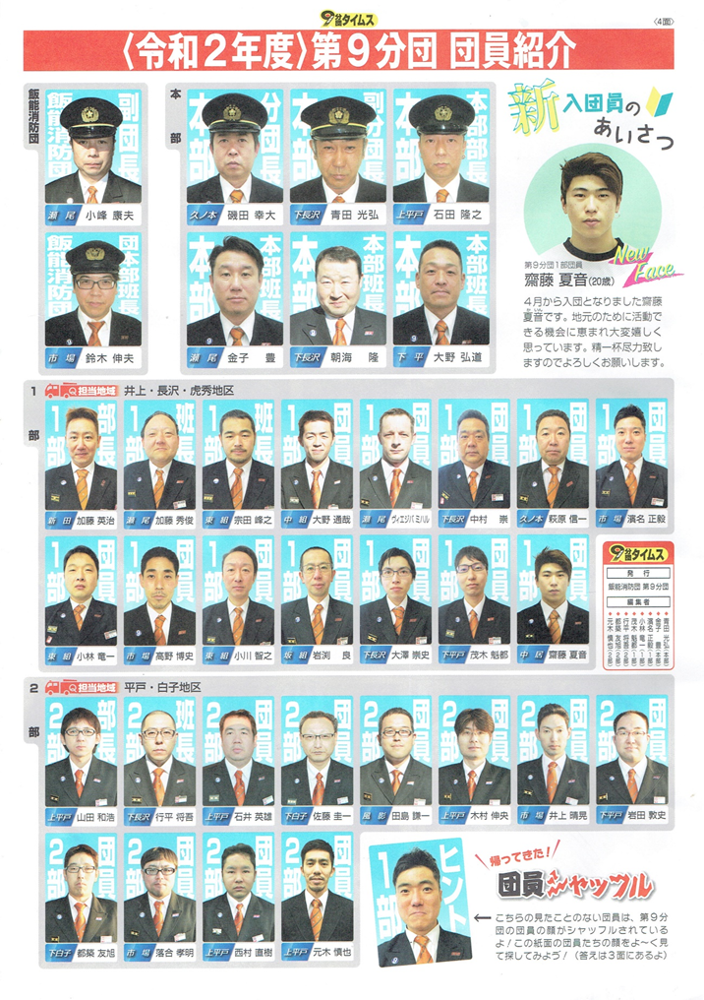
◆2021年3月 第9分団火災予防巡視
2021年3月7日火災予防巡視を行いました。管轄内に設置されている消火栓や防火水槽の場所を確認するとともに、防火水槽の水位状況の確認も行いました。
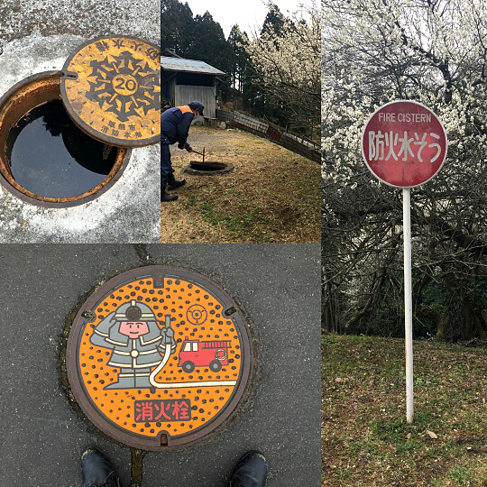
◆2020年12月 歳末特別警戒
飯能消防団では毎年12月25日から31日まで歳末特別警戒を行っています。今年は新型コロナウイルス感染症の感染拡大防止の観点からマスクの着用、検温の実施、手洗い、手指の消毒、詰所及び車両の換気に努め少人数、短時間での活動にとどめております。
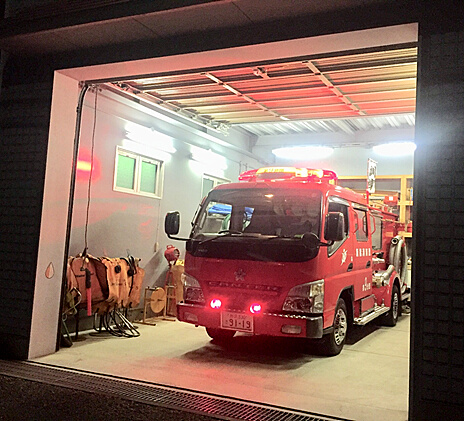
◆2020/11/22（日）清掃及び機械器具点検
この日は、飯能消防団特別点検の一週前の予行練習日でしたが、新型コロナウイルス感染症の影響により今年は中止となったため、我々消防団員の活動拠点である詰所、詰所周りの清掃及び機械器具点検を行いました。消防団では、消火活動に使用する器具以外にも様々な道具を所持しているため、道具の動作確認及び整備を行い、その後は、分団長からの訓示、表彰をいただきました。
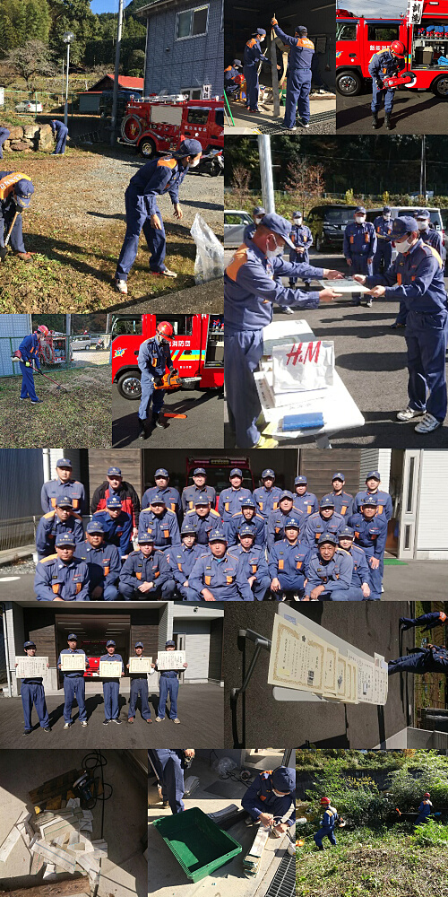
◆2020/11/12（木）夜間訓練
今月末に迫る飯能消防団特別点検にむけて、夜間合同訓練が飯能日高消防署にて実施しました。通常、消防団活動は土、日、祝日に行うことが多いのですが、今回のように平日の夜間に行うこともあります。各自、昼間仕事を終えてからでも進んで参加してくださり多くの人員が集まりました。9分団は小隊訓練を行い、1回目より2回目と皆の息が合っていき本番にむけてよい訓練となりました。
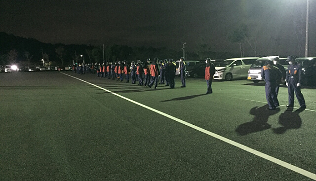
◆2020/10/11 小隊訓練
今年の特別点検で9分団は小隊訓練（停止間）を行います。11月の本番に向けて奥武蔵小学校の駐車場を借り練習を行いました。
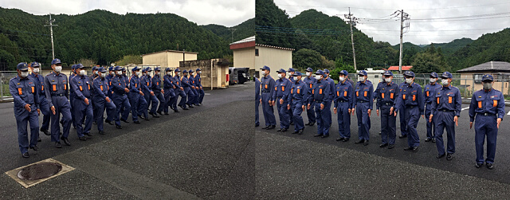
◆2020/10/11 地域を歩こう
警備消防団の活動には火事を消火する為の訓練以外に管轄区域で行われる行事などの警備活動も行います。10月11日には、飯能市の山を歩く「地域を歩こう」が開催され、たくさんの方が参加しました。例年、9分団は行事に参加しつつ警備を行っておりましたが、今年はコロナ渦の状況もあり警備のみの参加となりました。週半は台風の接近もあり開催自体が危ぶまれましたが、日曜日になると雨も上がり台風もそれ開催することができました。時には晴れ間ものぞき、秋を感じる良い一日となりました。
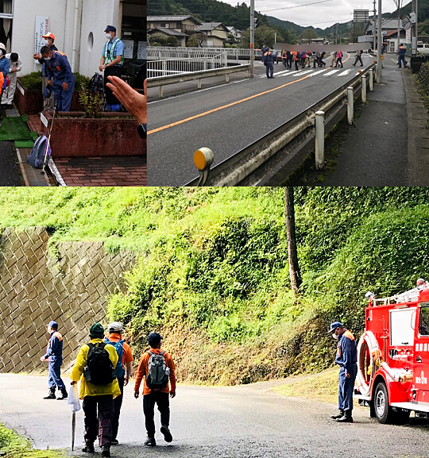
◆2020年9月13日 中継送水訓練
秀地区にて中継送水訓練が行われました。飯能市はもちろん9分団管轄内も大半が山林に囲まれています。これから空気の乾燥する季節を前に山火事や山林にある建物火災を想定して行う訓練になります。今回の訓練では小さな沢から水利をとり、そこから山を登りながらホース46本(距離にして約800ｍ）をつなぎ、途中小型ポンプを経由し水圧を確保しつつ放水するという内容です。各自いろいろ反省点はありますが有意義な訓練となりました。
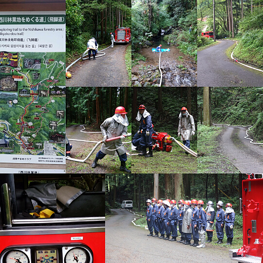
◆2020年7月5日 全団員訓練
飯能日高消防署にて全団員訓練が行われました。分列行進、観閲、服装規律の訓練を一通り行い最後には放水訓練も行いました。新入団員の齋藤君も全ての訓練をこなし、良い経験になりました。まだ慣れない部分も多いですが、9分団全体でサポートしていきます。
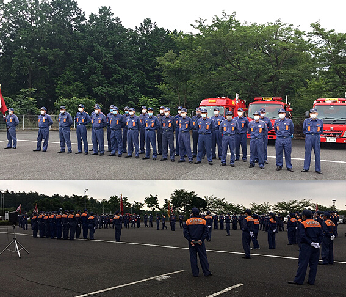
令和元年度トピックス
◆2020年6月21日 9分団訓練今年度初めて9分団全体での訓練が行われました。新入団員の基礎教育などを含め、後半は放水訓練を行いました。全団員、ポンプ操作ができるように基本から練習します。自然水利（川から直接水を吸う）を確保しポンプを経由して放水するという内容です。有事の際には、誰が現場に駆けつけてもスムーズに消火活動ができるように日頃から訓練をしています。
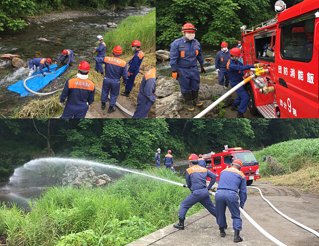
◆2019年5月19日(日) 放水訓練
東吾野、井上地区の川原にて放水訓練を行いました。小型ポンプで川から水を吸い、ポンプ車を経由して放水するという内容です。団員皆がすべての機械器具を使いこなせるよう、定期的に行う訓練です。
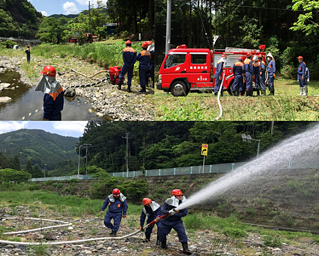